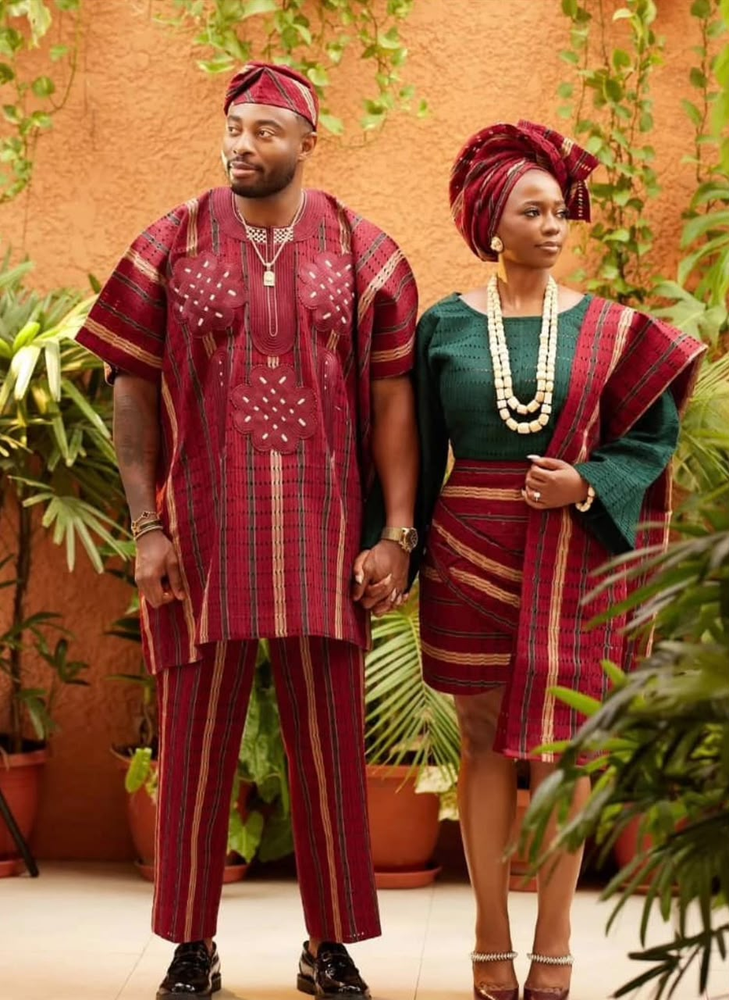
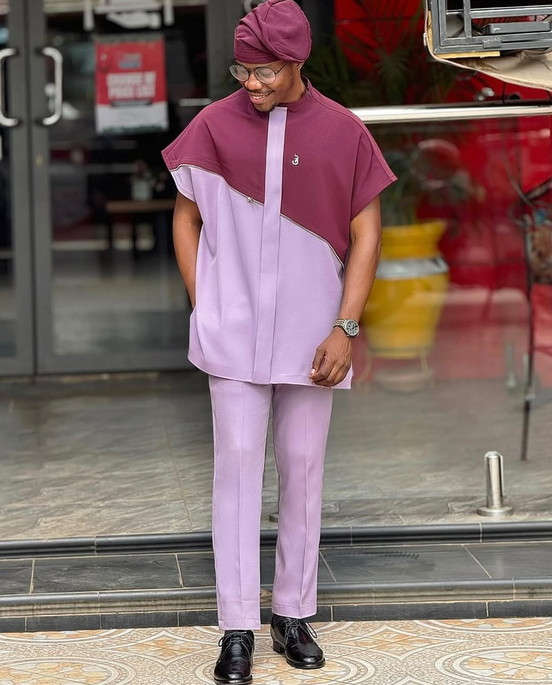
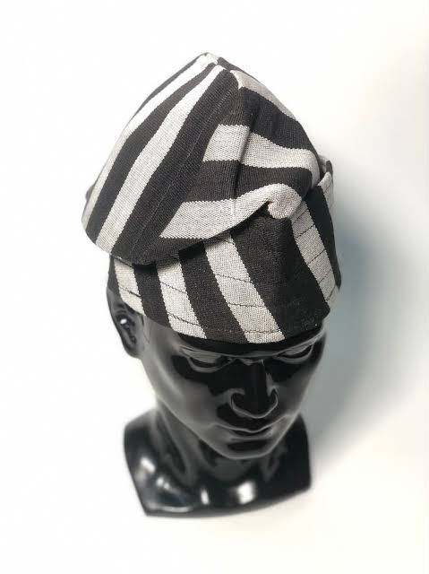
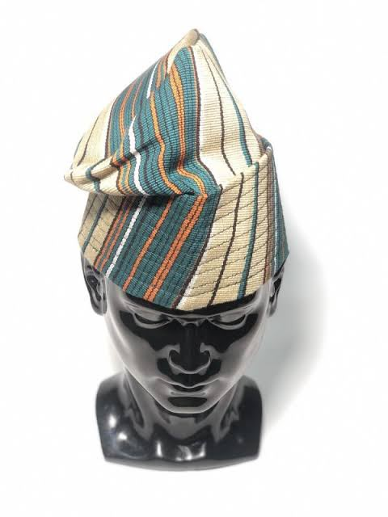
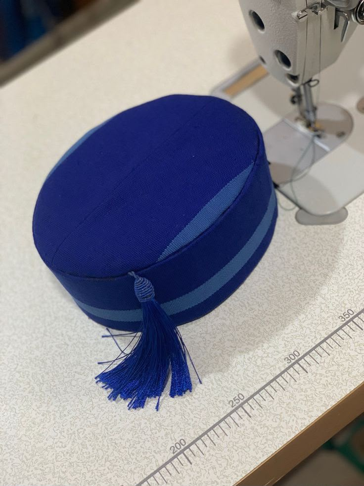

Custom Tailoring
Made from your measurements, your fabric choice, your occasion. Every seam is planned around how you actually move — sit, greet, dance — not just how you stand still.

Lagos · Custom Tailoring House
Adeolu builds garments the way the aso-oke is woven — thread by thread, on purpose. Custom tailoring, ready-to-wear, and one-on-one styling for the man and woman who walk into a room already decided.
01 — Selected work




02 — What we build
Made from your measurements, your fabric choice, your occasion. Every seam is planned around how you actually move — sit, greet, dance — not just how you stand still.
Finished pieces from the current collection, sized and shipped without the wait of a full fitting. Senator sets, caps, and coordinated outfits ready when you are.
One sit-down to plan an outfit, a wedding party's look, or a wardrobe direction. Fabric, colour, and silhouette advice before a single cut is made.
03 — The designer
I trained my eye on cloth that already has a job to do — aso-oke, senator wear, fila — fabric built for weddings, naming ceremonies, and Sunday mornings. Mustang Culture is what happens when that craft meets a sharper cut: heritage textiles, tailored with the same discipline you'd expect from a Savile Row jacket.
Every piece leaves the workshop measured twice, pressed once, and finished by hand. No shortcuts on the inside seams — that's where the quality actually lives.
04 — Get measured
Wedding, ceremony, everyday wear — send the occasion, the fabric you have in mind (or none at all), and a rough timeline. I'll reply with next steps and a fitting date.